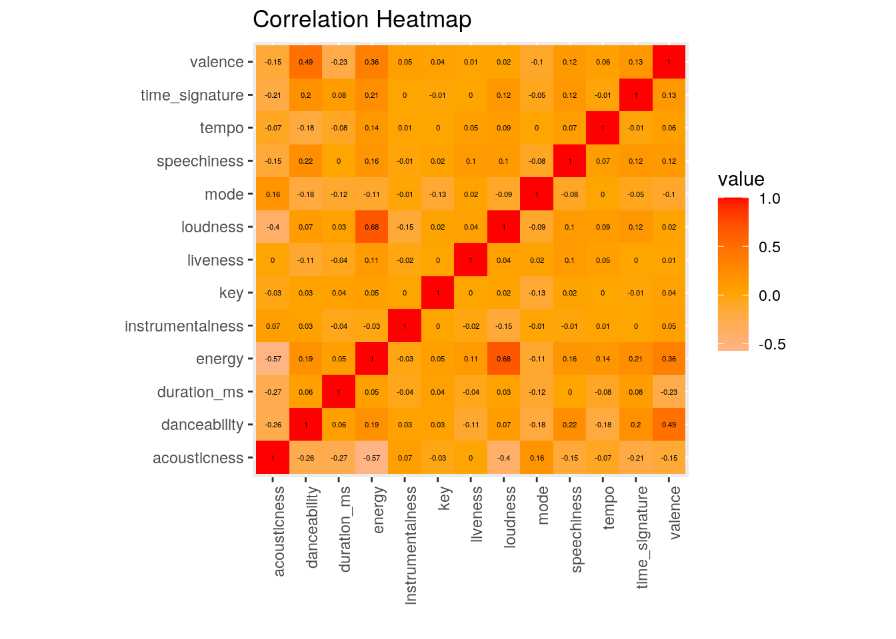
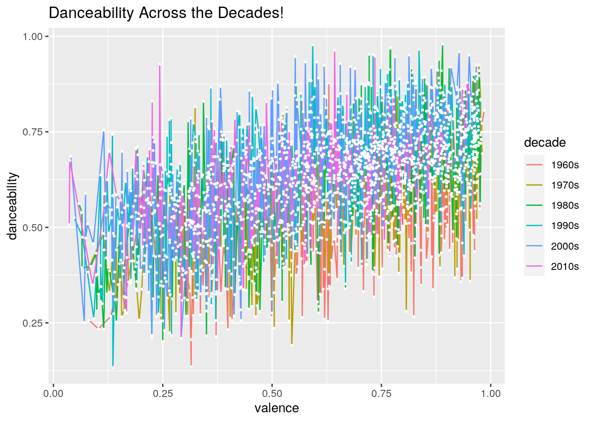
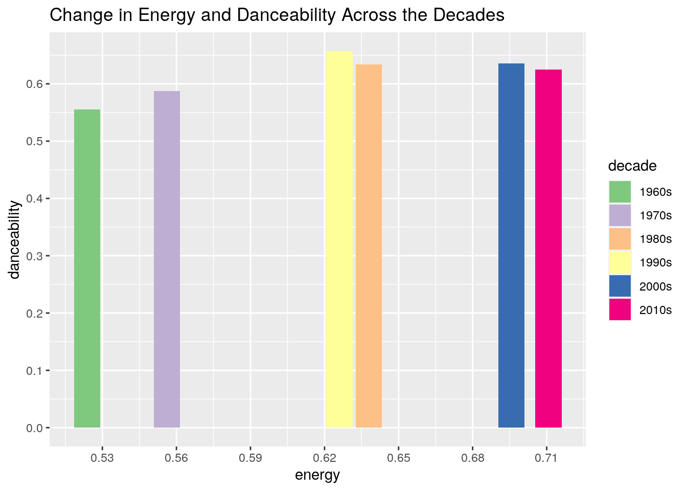
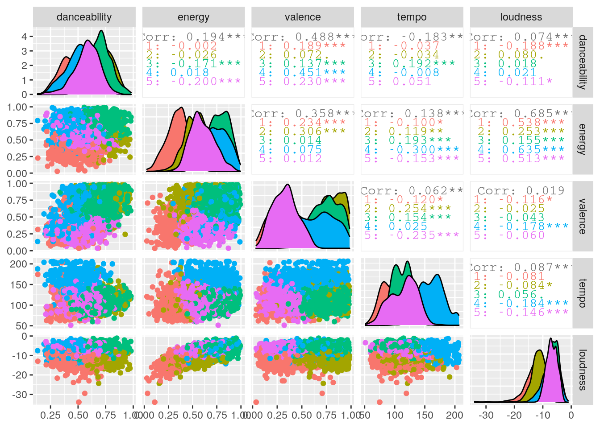
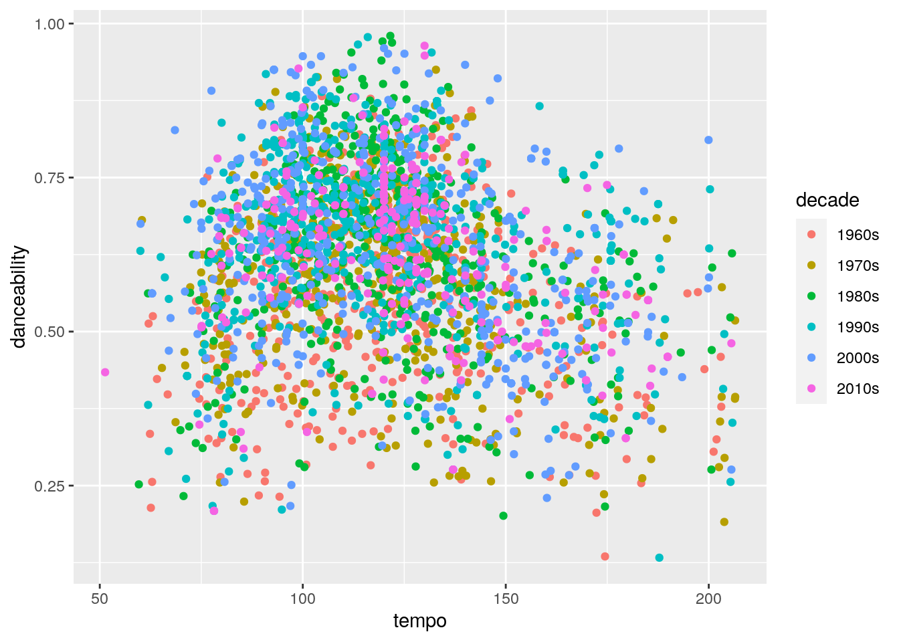
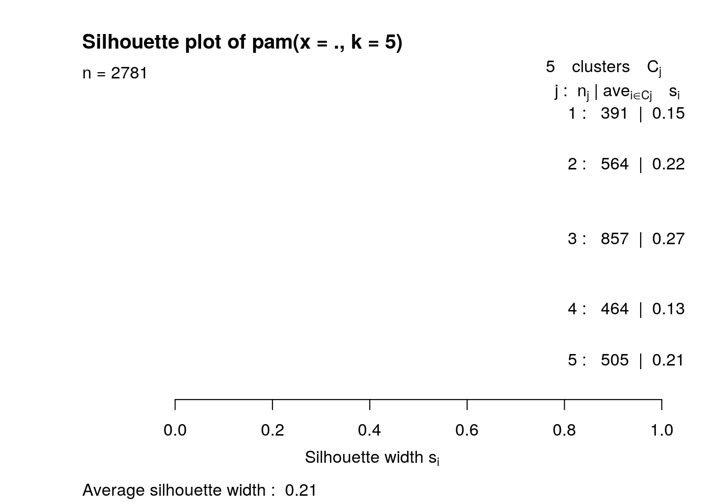

For my final project in biostatistics, I collected data from people's spotify history to see if there was any relationship between how introverted or extroverted someone was in relation to how much time they spent listening to music. Music has always been such a constant force in my life, especially during this time of uncertainity due to the pandemic. I grew up listeining to groovy songs from Fleetwood Mac, Lionel Richie, and Celine Dion to name a few of my musical influences thanks to my parents! After being assigned this project I knew I wanted to continue with this music theme and analyze data from billboard charts over the years. Both of the datasets I used were found online because I was really interested in analyzing data over the span of a few decades and the billboard dataset preloaded in r did not fit my desired criteria. The first dataset I included was the spotify track data dataset that I found which contains information from the top charts from the past decades. This dataset includes several descriptive variables such as the artist, song title, and the year the song was charted, in addition to specific characteristiscs of the songs such as danceability, energy, and tempo. The second dataset that I used for my project was the wiki hot 100s dataset which included data from the Billboard Hot 100 charts from 1960-2016! This dataset ony included four variables: the artist, title of the song, year it was charted, and its rank on the billboard charts. I had the idea to join these two datasets to first determine how many songs were similar between the two datasets. After identifying and narrowing down the similar songs across both billboard charts, I was interested in seeing if there was any discrepancy in danceability across the decades. I set out to find whether danceabiity differed in the popular music across the decades!I was also intrigued to see if any artists charted the Billboard Hot 100s for longer than one decade, and on the opposite end of this spectrum, I was curious to see if any artists were simply One-hit wonders during their time. Music has evolved so much over the years and I know I am constantly hearing from my parents how the music that is played on the pop radio today does not compare to the music made by the creative geniuses of their childhood. I had so much fun being able to apply the concepts we have been learning in class to analyze some truly groovy music data (this was the inspiration for my newly named dataset!)
install.packages("billboard", repos = "http://cran.us.r-project.org")## Installing package into '/stor/home/kv6653/R/x86_64-pc-linux-gnu-library/3.6'
## (as 'lib' is unspecified)library(billboard)
songs_data <- spotify_track_data
library(tidyverse)## ── Attaching packages ───────────── tidyverse 1.3.0 ──## ✓ ggplot2 3.3.2 ✓ purrr 0.3.4
## ✓ tibble 3.0.3 ✓ dplyr 1.0.1
## ✓ tidyr 1.1.1 ✓ stringr 1.4.0
## ✓ readr 1.3.1 ✓ forcats 0.5.0## ── Conflicts ──────────────── tidyverse_conflicts() ──
## x dplyr::filter() masks stats::filter()
## x dplyr::lag() masks stats::lag()billboard_raw <- as_tibble(wiki_hot_100s)
library(dplyr)
view(songs_data)
view(billboard_raw)install.packages("billboard", repos = "http://cran.us.r-project.org")## Installing package into '/stor/home/kv6653/R/x86_64-pc-linux-gnu-library/3.6'
## (as 'lib' is unspecified)library(billboard)
songs_data <- spotify_track_data
library(tidyverse)
billboard_raw <- as_tibble(wiki_hot_100s)
library(dplyr)
view(songs_data)
view(billboard_raw)My dataset was already tidy, therefore I included the pivot(longer) and pivot(wider) functions later in my data analysis.
head(songs_data)## # A tibble: 6 x 23
## year artist_name artist_id explicit track_name track_id danceability energy
## <chr> <chr> <chr> <lgl> <chr> <chr> <dbl> <dbl>
## 1 1960 Percy Fait… 24DQLSng… FALSE "The Them… 2kKL5kk… 0.466 0.389
## 2 1960 Jim Reeves 2Ev0e8GU… FALSE "He'll Ha… 7DH5dXV… 0.554 0.186
## 3 1960 Johnny Pre… 1B8n8vtE… FALSE "Running … 60DbxCJ… 0.758 0.462
## 4 1960 Mark Dinni… 55Rf9Kfq… FALSE "Teen Ang… 7GvhZ0F… 0.583 0.168
## 5 1960 Brenda Lee 4cPHsZM9… FALSE "I'm Sorr… 5VyBNCS… 0.567 0.141
## 6 1960 Elvis Pres… 43ZHCT0c… FALSE "It's Now… 2u8Lrq2… 0.635 0.391
## # … with 15 more variables: key <int>, loudness <dbl>, mode <int>,
## # speechiness <dbl>, acousticness <dbl>, instrumentalness <dbl>,
## # liveness <dbl>, valence <dbl>, tempo <dbl>, type <chr>, uri <chr>,
## # track_href <chr>, analysis_url <chr>, duration_ms <int>,
## # time_signature <int>head(billboard_raw)## # A tibble: 6 x 4
## no title artist year
## <chr> <chr> <chr> <chr>
## 1 1 Theme from A Summer Place Percy Faith 1960
## 2 2 He'll Have to Go Jim Reeves 1960
## 3 3 Cathy's Clown The Everly Brothers 1960
## 4 4 Running Bear Johnny Preston 1960
## 5 5 Teen Angel Mark Dinning 1960
## 6 6 I'm Sorry Brenda Lee 1960names(billboard_raw)[2] <- "track_name"
names(billboard_raw)[3] <- "artist_name"
groovyjamz<-songs_data %>% inner_join(billboard_raw, by=c("track_name","artist_name"))
view(groovyjamz)I joined my two datasets using the inner join type function. I used the inner join rather than the left, right, or semi-join type function because the inner join works to merge two datsets based on commonalities between columns. For my data analysis, I created a new dataset that only included the list of songs from the Billboard Hot 100 charts that were similar across both datatsets. Using the innerjoin, I was able to combine the two datasets using the columns for the artist of the song, as well as the name of the song. The inner join is able to recognize that my data was to be combined using those specific columns in the dataset, and it only joined the rows of data that matched across both sets of data. Therefore, an inner join was ideal to use for this data analysis. The cases that were dropped following this join were those songs that did not appear in both of the datasets. The billboard dataset initially contained 5,701 obersvations and 4 variables whereas the songs dataset had 5,497 observations and 23 variables. After merging the datasets, only 2,781 observations and 25 variables remained.The reason for this is because one of the datasets I used was scraped so that there was a randomly generated amount of songs from billboard charts included, hence the reason for this variation across two datasets for the Billboard charts. I initially only joined my datasets using the similar column of track name because I assumed that the best way to ensure only the same charting songs across both sets of data was to use the specific song title, rather than the name of the artist as many artists are on the charts for mutiple songs. I quickly realized that I could not only join using song title because there was overlap between artists who had songs on the top charts with the same name. After seeing Elvis Presley and Lionel Richie's "Stuck on You" combined I quickly realized I needed to update my join! This was just a fun realization I made that made me appreciate the difficulty and satisfaction of applying these concepts we have learned in class to real life data!
r = getOption("repos")
r["CRAN"] = "http://cran.us.r-project.org"
options(repos = r)
groovyjamz%>%summarize_all(n_distinct)## # A tibble: 1 x 25
## year.x artist_name artist_id explicit track_name track_id danceability energy
## <int> <int> <int> <int> <int> <int> <int> <int>
## 1 56 1261 1262 2 2347 2511 626 742
## # … with 17 more variables: key <int>, loudness <int>, mode <int>,
## # speechiness <int>, acousticness <int>, instrumentalness <int>,
## # liveness <int>, valence <int>, tempo <int>, type <int>, uri <int>,
## # track_href <int>, analysis_url <int>, duration_ms <int>,
## # time_signature <int>, no <int>, year.y <int>groovyjamz %>% filter(complete.cases(groovyjamz))## # A tibble: 2,781 x 25
## year.x artist_name artist_id explicit track_name track_id danceability energy
## <chr> <chr> <chr> <lgl> <chr> <chr> <dbl> <dbl>
## 1 1960 Jim Reeves 2Ev0e8GU… FALSE He'll Hav… 7DH5dXV… 0.554 0.186
## 2 1960 Johnny Pre… 1B8n8vtE… FALSE Running B… 60DbxCJ… 0.758 0.462
## 3 1960 Mark Dinni… 55Rf9Kfq… FALSE Teen Angel 7GvhZ0F… 0.583 0.168
## 4 1960 Jimmy Jones 7ydcRbgt… FALSE Handy Man 0X6Nnkf… 0.534 0.72
## 5 1960 Elvis Pres… 43ZHCT0c… FALSE Stuck on … 6RLOZGY… 0.664 0.539
## 6 1960 Connie Fra… 3EY5DxGd… FALSE Everybody… 6jdONXt… 0.587 0.72
## 7 1960 The Brothe… 0nd3tsqH… FALSE Greenfiel… 7F3R0rK… 0.485 0.182
## 8 1960 Marty Robb… 0Xi59sEw… FALSE El Paso 4f8hBeM… 0.654 0.452
## 9 1960 Connie Ste… 5dg9jB2s… FALSE Sixteen R… 0oI0ekr… 0.339 0.406
## 10 1960 Paul Anka 7ceUfdWq… FALSE Puppy Love 1wkIJld… 0.346 0.348
## # … with 2,771 more rows, and 17 more variables: key <int>, loudness <dbl>,
## # mode <int>, speechiness <dbl>, acousticness <dbl>, instrumentalness <dbl>,
## # liveness <dbl>, valence <dbl>, tempo <dbl>, type <chr>, uri <chr>,
## # track_href <chr>, analysis_url <chr>, duration_ms <int>,
## # time_signature <int>, no <chr>, year.y <chr>colnames(groovyjamz)[1] <- "decade"
groovyjamz_new<-mutate(groovyjamz, decade = case_when(decade<1970 ~"1960s", decade<1980~"1970s", decade<1990~"1980s", decade<2000~"1990s", decade<2010~"2000s", decade>=2010~"2010s"))
groovyjamz_new%>%group_by(decade)%>%summarize_if(is.numeric,c(mean=mean,sd=sd),na.rm=T) ## # A tibble: 6 x 27
## decade danceability_me… energy_mean key_mean loudness_mean mode_mean
## <chr> <dbl> <dbl> <dbl> <dbl> <dbl>
## 1 1960s 0.555 0.524 5.00 -10.3 0.830
## 2 1970s 0.587 0.556 5.03 -10.7 0.776
## 3 1980s 0.633 0.638 5.29 -9.57 0.696
## 4 1990s 0.657 0.626 5.58 -8.68 0.623
## 5 2000s 0.636 0.696 5.26 -5.73 0.621
## 6 2010s 0.624 0.711 5.28 -5.47 0.666
## # … with 21 more variables: speechiness_mean <dbl>, acousticness_mean <dbl>,
## # instrumentalness_mean <dbl>, liveness_mean <dbl>, valence_mean <dbl>,
## # tempo_mean <dbl>, duration_ms_mean <dbl>, time_signature_mean <dbl>,
## # danceability_sd <dbl>, energy_sd <dbl>, key_sd <dbl>, loudness_sd <dbl>,
## # mode_sd <dbl>, speechiness_sd <dbl>, acousticness_sd <dbl>,
## # instrumentalness_sd <dbl>, liveness_sd <dbl>, valence_sd <dbl>,
## # tempo_sd <dbl>, duration_ms_sd <dbl>, time_signature_sd <dbl>groovyjamz_new%>% add_count(artist_name)## # A tibble: 2,781 x 26
## decade artist_name artist_id explicit track_name track_id danceability energy
## <chr> <chr> <chr> <lgl> <chr> <chr> <dbl> <dbl>
## 1 1960s Jim Reeves 2Ev0e8GU… FALSE He'll Hav… 7DH5dXV… 0.554 0.186
## 2 1960s Johnny Pre… 1B8n8vtE… FALSE Running B… 60DbxCJ… 0.758 0.462
## 3 1960s Mark Dinni… 55Rf9Kfq… FALSE Teen Angel 7GvhZ0F… 0.583 0.168
## 4 1960s Jimmy Jones 7ydcRbgt… FALSE Handy Man 0X6Nnkf… 0.534 0.72
## 5 1960s Elvis Pres… 43ZHCT0c… FALSE Stuck on … 6RLOZGY… 0.664 0.539
## 6 1960s Connie Fra… 3EY5DxGd… FALSE Everybody… 6jdONXt… 0.587 0.72
## 7 1960s The Brothe… 0nd3tsqH… FALSE Greenfiel… 7F3R0rK… 0.485 0.182
## 8 1960s Marty Robb… 0Xi59sEw… FALSE El Paso 4f8hBeM… 0.654 0.452
## 9 1960s Connie Ste… 5dg9jB2s… FALSE Sixteen R… 0oI0ekr… 0.339 0.406
## 10 1960s Paul Anka 7ceUfdWq… FALSE Puppy Love 1wkIJld… 0.346 0.348
## # … with 2,771 more rows, and 18 more variables: key <int>, loudness <dbl>,
## # mode <int>, speechiness <dbl>, acousticness <dbl>, instrumentalness <dbl>,
## # liveness <dbl>, valence <dbl>, tempo <dbl>, type <chr>, uri <chr>,
## # track_href <chr>, analysis_url <chr>, duration_ms <int>,
## # time_signature <int>, no <chr>, year.y <chr>, n <int>groovyjamz_new %>% add_count(artist_name) %>% filter(no <= 10) %>%arrange(desc(year.y))%>%select(decade,no,everything()) ## # A tibble: 46 x 26
## decade no artist_name artist_id explicit track_name track_id danceability
## <chr> <chr> <chr> <chr> <lgl> <chr> <chr> <dbl>
## 1 2010s 10 Katy Perry 6jJ0s89e… FALSE Roar 3XSczvk… 0.667
## 2 2010s 10 Katy Perry 6jJ0s89e… FALSE Roar 3bDGwl0… 0.56
## 3 2010s 10 One Direct… 4AK6F7OL… FALSE What Make… 3SPDQfj… 0.729
## 4 2010s 1 Adele 4dpARuHx… FALSE Rolling i… 1CkvWZm… 0.729
## 5 2010s 1 Adele 4dpARuHx… FALSE Rolling i… 1CkvWZm… 0.729
## 6 2000s 1 The Black … 1yxSLGMD… FALSE Boom Boom… 7xRNsqO… 0.869
## 7 2000s 10 The All-Am… 3vAaWhdB… FALSE Gives You… 6ihL9Tj… 0.714
## 8 2000s 10 Chris Brown 7bXgB6jM… FALSE Forever 7tAXHZd… 0.672
## 9 2000s 1 Beyoncé 6vWDO969… FALSE Irreplace… 1G7DcLz… 0.576
## 10 2000s 1 Daniel Pow… 7xTcuBOI… FALSE Bad Day 0mUyMaw… 0.599
## # … with 36 more rows, and 18 more variables: energy <dbl>, key <int>,
## # loudness <dbl>, mode <int>, speechiness <dbl>, acousticness <dbl>,
## # instrumentalness <dbl>, liveness <dbl>, valence <dbl>, tempo <dbl>,
## # type <chr>, uri <chr>, track_href <chr>, analysis_url <chr>,
## # duration_ms <int>, time_signature <int>, year.y <chr>, n <int>groovyjamz_new %>% add_count(artist_name) %>% filter(no == 1, n== 1) ## # A tibble: 2 x 26
## decade artist_name artist_id explicit track_name track_id danceability energy
## <chr> <chr> <chr> <lgl> <chr> <chr> <dbl> <dbl>
## 1 1980s The Police 5NGO30tJ… FALSE Every Bre… 2PnNomk… 0.828 0.447
## 2 2000s Daniel Pow… 7xTcuBOI… FALSE Bad Day 0mUyMaw… 0.599 0.785
## # … with 18 more variables: key <int>, loudness <dbl>, mode <int>,
## # speechiness <dbl>, acousticness <dbl>, instrumentalness <dbl>,
## # liveness <dbl>, valence <dbl>, tempo <dbl>, type <chr>, uri <chr>,
## # track_href <chr>, analysis_url <chr>, duration_ms <int>,
## # time_signature <int>, no <chr>, year.y <chr>, n <int>groovyjamz_new %>% filter(no == 1) %>% add_count(artist_name)%>%filter(n>1) ## # A tibble: 2 x 26
## decade artist_name artist_id explicit track_name track_id danceability energy
## <chr> <chr> <chr> <lgl> <chr> <chr> <dbl> <dbl>
## 1 2010s Adele 4dpARuHx… FALSE Rolling i… 1CkvWZm… 0.729 0.756
## 2 2010s Adele 4dpARuHx… FALSE Rolling i… 1CkvWZm… 0.729 0.756
## # … with 18 more variables: key <int>, loudness <dbl>, mode <int>,
## # speechiness <dbl>, acousticness <dbl>, instrumentalness <dbl>,
## # liveness <dbl>, valence <dbl>, tempo <dbl>, type <chr>, uri <chr>,
## # track_href <chr>, analysis_url <chr>, duration_ms <int>,
## # time_signature <int>, no <chr>, year.y <chr>, n <int>groovyjamz_new%>%filter(artist_name== "Fleetwood Mac")%>%select(no, everything())## # A tibble: 7 x 25
## no decade artist_name artist_id explicit track_name track_id danceability
## <chr> <chr> <chr> <chr> <lgl> <chr> <chr> <dbl>
## 1 77 1970s Fleetwood … 08GQAI4e… FALSE Rhiannon 5TWPfke… 0.722
## 2 53 1970s Fleetwood … 08GQAI4e… FALSE Say You L… 2kOOxUI… 0.723
## 3 94 1970s Fleetwood … 08GQAI4e… FALSE Go Your O… 0FeCO85… 0.597
## 4 52 1970s Fleetwood … 08GQAI4e… FALSE Don't Stop 4SXU3lU… 0.686
## 5 39 1970s Fleetwood … 08GQAI4e… FALSE Dreams 703BT1N… 0.823
## 6 94 1980s Fleetwood … 08GQAI4e… FALSE Tusk 56vXknI… 0.614
## 7 31 1980s Fleetwood … 08GQAI4e… FALSE Hold Me 4kRMsLX… 0.709
## # … with 17 more variables: energy <dbl>, key <int>, loudness <dbl>,
## # mode <int>, speechiness <dbl>, acousticness <dbl>, instrumentalness <dbl>,
## # liveness <dbl>, valence <dbl>, tempo <dbl>, type <chr>, uri <chr>,
## # track_href <chr>, analysis_url <chr>, duration_ms <int>,
## # time_signature <int>, year.y <chr>groovyjamz_new%>%filter(artist_name== "Taylor Swift")%>%select(no, everything())## # A tibble: 14 x 25
## no decade artist_name artist_id explicit track_name track_id danceability
## <chr> <chr> <chr> <chr> <lgl> <chr> <chr> <dbl>
## 1 81 2000s Taylor Swi… 06HL4z0C… FALSE Love Story 0kN3oXY… 0.611
## 2 5 2000s Taylor Swi… 06HL4z0C… FALSE Love Story 0kN3oXY… 0.611
## 3 76 2000s Taylor Swi… 06HL4z0C… FALSE White Hor… 4jPtq9s… 0.355
## 4 46 2010s Taylor Swi… 06HL4z0C… FALSE Mine 0dBW6Zs… 0.619
## 5 33 2010s Taylor Swi… 06HL4z0C… FALSE We Are Ne… 0QGFCtX… 0.533
## 6 13 2010s Taylor Swi… 06HL4z0C… FALSE Shake It … 30nn05U… 0.507
## 7 18 2010s Taylor Swi… 06HL4z0C… FALSE Shake It … 30nn05U… 0.507
## 8 7 2010s Taylor Swi… 06HL4z0C… FALSE Blank Spa… 2sC2P3B… 0.753
## 9 7 2010s Taylor Swi… 06HL4z0C… FALSE Blank Spa… 3ulIErp… 0.76
## 10 13 2010s Taylor Swi… 06HL4z0C… FALSE Shake It … 34ONrmv… 0.647
## 11 18 2010s Taylor Swi… 06HL4z0C… FALSE Shake It … 34ONrmv… 0.647
## 12 57 2010s Taylor Swi… 06HL4z0C… FALSE Wildest D… 4NphdFx… 0.55
## 13 79 2010s Taylor Swi… 06HL4z0C… FALSE Wildest D… 4NphdFx… 0.55
## 14 29 2010s Taylor Swi… 06HL4z0C… FALSE Style 4AVUqcP… 0.588
## # … with 17 more variables: energy <dbl>, key <int>, loudness <dbl>,
## # mode <int>, speechiness <dbl>, acousticness <dbl>, instrumentalness <dbl>,
## # liveness <dbl>, valence <dbl>, tempo <dbl>, type <chr>, uri <chr>,
## # track_href <chr>, analysis_url <chr>, duration_ms <int>,
## # time_signature <int>, year.y <chr>summary(groovyjamz_new)## decade artist_name artist_id explicit
## Length:2781 Length:2781 Length:2781 Mode :logical
## Class :character Class :character Class :character FALSE:2652
## Mode :character Mode :character Mode :character TRUE :129
##
##
##
## track_name track_id danceability energy
## Length:2781 Length:2781 Min. :0.1330 Min. :0.0264
## Class :character Class :character 1st Qu.:0.5250 1st Qu.:0.4860
## Mode :character Mode :character Median :0.6330 Median :0.6410
## Mean :0.6187 Mean :0.6248
## 3rd Qu.:0.7220 3rd Qu.:0.7770
## Max. :0.9800 Max. :0.9930
## key loudness mode speechiness
## Min. : 0.00 Min. :-33.987 Min. :0.0000 Min. :0.02150
## 1st Qu.: 2.00 1st Qu.:-10.674 1st Qu.:0.0000 1st Qu.:0.03140
## Median : 5.00 Median : -7.830 Median :1.0000 Median :0.03960
## Mean : 5.26 Mean : -8.460 Mean :0.6951 Mean :0.05981
## 3rd Qu.: 8.00 3rd Qu.: -5.710 3rd Qu.:1.0000 3rd Qu.:0.05890
## Max. :11.00 Max. : -1.097 Max. :1.0000 Max. :0.61300
## acousticness instrumentalness liveness valence
## Min. :0.0000286 Min. :0.0000000 Min. :0.0189 Min. :0.0361
## 1st Qu.:0.0444000 1st Qu.:0.0000000 1st Qu.:0.0866 1st Qu.:0.4030
## Median :0.1610000 Median :0.0000053 Median :0.1220 Median :0.6360
## Mean :0.2614501 Mean :0.0261131 Mean :0.1759 Mean :0.6051
## 3rd Qu.:0.4320000 3rd Qu.:0.0003620 3rd Qu.:0.2170 3rd Qu.:0.8040
## Max. :0.9860000 Max. :0.9840000 Max. :0.9900 Max. :0.9850
## tempo type uri track_href
## Min. : 51.32 Length:2781 Length:2781 Length:2781
## 1st Qu.:100.00 Class :character Class :character Class :character
## Median :119.28 Mode :character Mode :character Mode :character
## Mean :120.18
## 3rd Qu.:135.11
## Max. :206.52
## analysis_url duration_ms time_signature no
## Length:2781 Min. : 91373 Min. :1.000 Length:2781
## Class :character 1st Qu.:198707 1st Qu.:4.000 Class :character
## Mode :character Median :232000 Median :4.000 Mode :character
## Mean :234073 Mean :3.958
## 3rd Qu.:264504 3rd Qu.:4.000
## Max. :817733 Max. :5.000
## year.y
## Length:2781
## Class :character
## Mode :character
##
##
## groovyjamz_long<-groovyjamz_new%>% summarize_if(is.numeric, list(min=min,max=max,mean=mean,sd=sd,median=median),na.rm=T)%>%pivot_longer(danceability_min:time_signature_median)
groovyjamz_long%>% pivot_wider(names_from=name, values_from=value) ## # A tibble: 1 x 65
## danceability_min energy_min key_min loudness_min mode_min speechiness_min
## <dbl> <dbl> <dbl> <dbl> <dbl> <dbl>
## 1 0.133 0.0264 0 -34.0 0 0.0215
## # … with 59 more variables: acousticness_min <dbl>, instrumentalness_min <dbl>,
## # liveness_min <dbl>, valence_min <dbl>, tempo_min <dbl>,
## # duration_ms_min <dbl>, time_signature_min <dbl>, danceability_max <dbl>,
## # energy_max <dbl>, key_max <dbl>, loudness_max <dbl>, mode_max <dbl>,
## # speechiness_max <dbl>, acousticness_max <dbl>, instrumentalness_max <dbl>,
## # liveness_max <dbl>, valence_max <dbl>, tempo_max <dbl>,
## # duration_ms_max <dbl>, time_signature_max <dbl>, danceability_mean <dbl>,
## # energy_mean <dbl>, key_mean <dbl>, loudness_mean <dbl>, mode_mean <dbl>,
## # speechiness_mean <dbl>, acousticness_mean <dbl>,
## # instrumentalness_mean <dbl>, liveness_mean <dbl>, valence_mean <dbl>,
## # tempo_mean <dbl>, duration_ms_mean <dbl>, time_signature_mean <dbl>,
## # danceability_sd <dbl>, energy_sd <dbl>, key_sd <dbl>, loudness_sd <dbl>,
## # mode_sd <dbl>, speechiness_sd <dbl>, acousticness_sd <dbl>,
## # instrumentalness_sd <dbl>, liveness_sd <dbl>, valence_sd <dbl>,
## # tempo_sd <dbl>, duration_ms_sd <dbl>, time_signature_sd <dbl>,
## # danceability_median <dbl>, energy_median <dbl>, key_median <dbl>,
## # loudness_median <dbl>, mode_median <dbl>, speechiness_median <dbl>,
## # acousticness_median <dbl>, instrumentalness_median <dbl>,
## # liveness_median <dbl>, valence_median <dbl>, tempo_median <dbl>,
## # duration_ms_median <dbl>, time_signature_median <dbl>groovynum<-groovyjamz_new%>% select(decade,artist_name,danceability, energy, valence, tempo, loudness)
Sum_Groovy<-groovynum%>%group_by(decade)%>%summarize_if(is.numeric,list(min=min,max=max,mean=mean,sd=sd,median=median),na.rm=T)
install.packages("kableExtra")## Installing package into '/stor/home/kv6653/R/x86_64-pc-linux-gnu-library/3.6'
## (as 'lib' is unspecified)library(kableExtra)##
## Attaching package: 'kableExtra'## The following object is masked from 'package:dplyr':
##
## group_rowskbl(Sum_Groovy)| decade | danceability_min | energy_min | valence_min | tempo_min | loudness_min | danceability_max | energy_max | valence_max | tempo_max | loudness_max | danceability_mean | energy_mean | valence_mean | tempo_mean | loudness_mean | danceability_sd | energy_sd | valence_sd | tempo_sd | loudness_sd | danceability_median | energy_median | valence_median | tempo_median | loudness_median |
|---|---|---|---|---|---|---|---|---|---|---|---|---|---|---|---|---|---|---|---|---|---|---|---|---|---|
| 1960s | 0.135 | 0.0335 | 0.0812 | 62.033 | -29.467 | 0.882 | 0.989 | 0.985 | 203.081 | -1.969 | 0.5549709 | 0.5238507 | 0.6917529 | 120.1395 | -10.347255 | 0.1464123 | 0.1920124 | 0.2177194 | 27.67858 | 3.746286 | 0.5620 | 0.5180 | 0.7320 | 118.383 | -10.0250 |
| 1970s | 0.191 | 0.0264 | 0.0772 | 60.390 | -24.336 | 0.925 | 0.973 | 0.981 | 206.518 | -3.207 | 0.5870377 | 0.5561716 | 0.6590293 | 119.7566 | -10.668774 | 0.1468679 | 0.1887733 | 0.2345642 | 27.72690 | 3.331024 | 0.5990 | 0.5600 | 0.7150 | 119.103 | -10.3190 |
| 1980s | 0.201 | 0.1280 | 0.0581 | 59.622 | -20.335 | 0.980 | 0.989 | 0.979 | 205.726 | -1.227 | 0.6333629 | 0.6379684 | 0.6428829 | 120.6579 | -9.566243 | 0.1464401 | 0.1929307 | 0.2494934 | 24.78933 | 3.272372 | 0.6390 | 0.6565 | 0.7000 | 119.014 | -9.1995 |
| 1990s | 0.133 | 0.0744 | 0.0473 | 59.999 | -18.943 | 0.978 | 0.993 | 0.977 | 205.832 | -1.970 | 0.6569897 | 0.6260813 | 0.5746123 | 116.9076 | -8.682362 | 0.1362789 | 0.1826258 | 0.2420759 | 28.44851 | 2.733472 | 0.6740 | 0.6410 | 0.6010 | 111.893 | -8.3420 |
| 2000s | 0.209 | 0.1320 | 0.0395 | 60.048 | -14.001 | 0.960 | 0.976 | 0.967 | 205.576 | -1.357 | 0.6358968 | 0.6956815 | 0.5326893 | 121.6356 | -5.730523 | 0.1485781 | 0.1521673 | 0.2312731 | 28.78980 | 1.941017 | 0.6455 | 0.6955 | 0.5335 | 120.124 | -5.4235 |
| 2010s | 0.209 | 0.1080 | 0.0361 | 51.316 | -33.987 | 0.964 | 0.958 | 0.962 | 205.570 | -1.097 | 0.6244548 | 0.7106689 | 0.5403599 | 123.7818 | -5.468967 | 0.1266742 | 0.1511836 | 0.2295782 | 27.70019 | 2.845803 | 0.6370 | 0.7410 | 0.5450 | 121.956 | -5.1190 |
kbl(Sum_Groovy)%>%kable_styling(bootstrap_options =c("striped", "hover"))| decade | danceability_min | energy_min | valence_min | tempo_min | loudness_min | danceability_max | energy_max | valence_max | tempo_max | loudness_max | danceability_mean | energy_mean | valence_mean | tempo_mean | loudness_mean | danceability_sd | energy_sd | valence_sd | tempo_sd | loudness_sd | danceability_median | energy_median | valence_median | tempo_median | loudness_median |
|---|---|---|---|---|---|---|---|---|---|---|---|---|---|---|---|---|---|---|---|---|---|---|---|---|---|
| 1960s | 0.135 | 0.0335 | 0.0812 | 62.033 | -29.467 | 0.882 | 0.989 | 0.985 | 203.081 | -1.969 | 0.5549709 | 0.5238507 | 0.6917529 | 120.1395 | -10.347255 | 0.1464123 | 0.1920124 | 0.2177194 | 27.67858 | 3.746286 | 0.5620 | 0.5180 | 0.7320 | 118.383 | -10.0250 |
| 1970s | 0.191 | 0.0264 | 0.0772 | 60.390 | -24.336 | 0.925 | 0.973 | 0.981 | 206.518 | -3.207 | 0.5870377 | 0.5561716 | 0.6590293 | 119.7566 | -10.668774 | 0.1468679 | 0.1887733 | 0.2345642 | 27.72690 | 3.331024 | 0.5990 | 0.5600 | 0.7150 | 119.103 | -10.3190 |
| 1980s | 0.201 | 0.1280 | 0.0581 | 59.622 | -20.335 | 0.980 | 0.989 | 0.979 | 205.726 | -1.227 | 0.6333629 | 0.6379684 | 0.6428829 | 120.6579 | -9.566243 | 0.1464401 | 0.1929307 | 0.2494934 | 24.78933 | 3.272372 | 0.6390 | 0.6565 | 0.7000 | 119.014 | -9.1995 |
| 1990s | 0.133 | 0.0744 | 0.0473 | 59.999 | -18.943 | 0.978 | 0.993 | 0.977 | 205.832 | -1.970 | 0.6569897 | 0.6260813 | 0.5746123 | 116.9076 | -8.682362 | 0.1362789 | 0.1826258 | 0.2420759 | 28.44851 | 2.733472 | 0.6740 | 0.6410 | 0.6010 | 111.893 | -8.3420 |
| 2000s | 0.209 | 0.1320 | 0.0395 | 60.048 | -14.001 | 0.960 | 0.976 | 0.967 | 205.576 | -1.357 | 0.6358968 | 0.6956815 | 0.5326893 | 121.6356 | -5.730523 | 0.1485781 | 0.1521673 | 0.2312731 | 28.78980 | 1.941017 | 0.6455 | 0.6955 | 0.5335 | 120.124 | -5.4235 |
| 2010s | 0.209 | 0.1080 | 0.0361 | 51.316 | -33.987 | 0.964 | 0.958 | 0.962 | 205.570 | -1.097 | 0.6244548 | 0.7106689 | 0.5403599 | 123.7818 | -5.468967 | 0.1266742 | 0.1511836 | 0.2295782 | 27.70019 | 2.845803 | 0.6370 | 0.7410 | 0.5450 | 121.956 | -5.1190 |
flipped<-t(Sum_Groovy)
kbl(flipped)%>%kable_styling(bootstrap_options = c("striped", "hover"))| decade | 1960s | 1970s | 1980s | 1990s | 2000s | 2010s |
| danceability_min | 0.135 | 0.191 | 0.201 | 0.133 | 0.209 | 0.209 |
| energy_min | 0.0335 | 0.0264 | 0.1280 | 0.0744 | 0.1320 | 0.1080 |
| valence_min | 0.0812 | 0.0772 | 0.0581 | 0.0473 | 0.0395 | 0.0361 |
| tempo_min | 62.033 | 60.390 | 59.622 | 59.999 | 60.048 | 51.316 |
| loudness_min | -29.467 | -24.336 | -20.335 | -18.943 | -14.001 | -33.987 |
| danceability_max | 0.882 | 0.925 | 0.980 | 0.978 | 0.960 | 0.964 |
| energy_max | 0.989 | 0.973 | 0.989 | 0.993 | 0.976 | 0.958 |
| valence_max | 0.985 | 0.981 | 0.979 | 0.977 | 0.967 | 0.962 |
| tempo_max | 203.081 | 206.518 | 205.726 | 205.832 | 205.576 | 205.570 |
| loudness_max | -1.969 | -3.207 | -1.227 | -1.970 | -1.357 | -1.097 |
| danceability_mean | 0.5549709 | 0.5870377 | 0.6333629 | 0.6569897 | 0.6358968 | 0.6244548 |
| energy_mean | 0.5238507 | 0.5561716 | 0.6379684 | 0.6260813 | 0.6956815 | 0.7106689 |
| valence_mean | 0.6917529 | 0.6590293 | 0.6428829 | 0.5746123 | 0.5326893 | 0.5403599 |
| tempo_mean | 120.1395 | 119.7566 | 120.6579 | 116.9076 | 121.6356 | 123.7818 |
| loudness_mean | -10.347255 | -10.668774 | -9.566243 | -8.682362 | -5.730523 | -5.468967 |
| danceability_sd | 0.1464123 | 0.1468679 | 0.1464401 | 0.1362789 | 0.1485781 | 0.1266742 |
| energy_sd | 0.1920124 | 0.1887733 | 0.1929307 | 0.1826258 | 0.1521673 | 0.1511836 |
| valence_sd | 0.2177194 | 0.2345642 | 0.2494934 | 0.2420759 | 0.2312731 | 0.2295782 |
| tempo_sd | 27.67858 | 27.72690 | 24.78933 | 28.44851 | 28.78980 | 27.70019 |
| loudness_sd | 3.746286 | 3.331025 | 3.272373 | 2.733472 | 1.941017 | 2.845803 |
| danceability_median | 0.5620 | 0.5990 | 0.6390 | 0.6740 | 0.6455 | 0.6370 |
| energy_median | 0.5180 | 0.5600 | 0.6565 | 0.6410 | 0.6955 | 0.7410 |
| valence_median | 0.7320 | 0.7150 | 0.7000 | 0.6010 | 0.5335 | 0.5450 |
| tempo_median | 118.383 | 119.103 | 119.014 | 111.893 | 120.124 | 121.956 |
| loudness_median | -10.0250 | -10.3190 | -9.1995 | -8.3420 | -5.4235 | -5.1190 |
After running summary statistics on my data I was especially interested in comparing the statistics from the danceability, energy, loudness, tempo, and valence of music across the decades. Danceability, measured on a scale from 0.0-1.0 refers to how danceable a song is based on certain characteristics such as its tempo and beat strength.Valence refers to how cheerful and positive a song is, with 1.0 being the most upbeat a song can be. I found that the 1990s had the highest average danceability, with music averaging a danceability factor of 0.657.I initially thought that the deacde with the highest danceability would consequently have music with the highest energy, loudness, tempo, and valence as well because I associate these variables as being better conditions for dancing.Instead, I found that the 2010s had the highest energy of songs on average, with 0.711. The 2010s also experienced music with the highest loudness and tempo on average. Furthermore, I found that valence was strongest in the 1960s with an average value of 0.692.Although the 1960s expereinced music with the lowest energy and danceability. This is interesting to think about the social atmosphere of the 1960s which can be characaterized as being a cultural decade filled with new ideolgies, experimentation, and music born from Woodstock.
In addition to analyzing the danceable factor of music that was born out of each decade, I also wanted to analyze the artists that topped the billboard charts. I found that there were only 46 artists that were in the top 10 overall on the billboard 100 charts. I was surprised to find that out of all the observations, there were only 2 'one-hit wonders'. The Police and Daniel Powter both only made it to number 1 on the billboard charts once. After analyzing the one hit wonders from the dataset I was intrigued to see if there was any artist who made it to number 1 on the charts more than one time with the same song. I found that the only artist to do so was Adele, with her hit song, rolling in the deep. These results really shocked me because when I think about the music that was born out of the 60s, 70s, and 80s especially, I thought there would be more artists who topped the charts. Out of curiosity I wanted to see where Fleetwood Mac and Taylor Swift were at on the charts as they are popular musicians who have released several hit songs. I found that Fleetwood Mac made it on the charts for two decades, in the 1970s and 1980s, however they never had a song hit the number one spot. Similarly, with Taylor Swift, she had 14 songs over the 2000s and 2010s that made it to the top 100 charts, just not at number 1. It is also important to note that not every song from the billboard charts during these decades are listed, so this could have resulted in these odd discrepancies; still very neat to analyze nonetheless!
cormat <- groovyjamz_new %>% select_if(is.numeric) %>% cor(use="pair")
tidycor <- cormat %>% as.data.frame %>% rownames_to_column("var1") %>%
pivot_longer(-1,names_to="var2",values_to="correlation")
tidycor## # A tibble: 169 x 3
## var1 var2 correlation
## <chr> <chr> <dbl>
## 1 danceability danceability 1
## 2 danceability energy 0.194
## 3 danceability key 0.0312
## 4 danceability loudness 0.0742
## 5 danceability mode -0.180
## 6 danceability speechiness 0.218
## 7 danceability acousticness -0.263
## 8 danceability instrumentalness 0.0276
## 9 danceability liveness -0.114
## 10 danceability valence 0.488
## # … with 159 more rowsgroovyjamz_new%>%select_if(is.numeric)%>%cor%>%as.data.frame%>%
rownames_to_column%>%pivot_longer(-1)%>%
ggplot(aes(rowname,name,fill=value))+ggtitle("Correlation Heatmap")+geom_tile()+
geom_text(aes(label=round(value,2)),size=1.5)+
theme(axis.text.x = element_text(angle = 90, hjust=1))+
xlab("")+ylab("")+coord_fixed()+
scale_fill_gradient2(low="pink",mid="orange",high="red")
After running the correlation matrix and creating the corresponding heatmap, I found that the variables of loudness and energy as well as valence and danceability were the most highly correlated. They had correlation values of 0.68 and 0.49, respectively. These values suggest that there is a positive correlation so as loudness in a song increases, its energy levels also increase. Similarly, as the valence or positivity of a soundtrack increases, its measure of danceability also goes up.
ggplot(groovyjamz_new, aes(valence, danceability, color = decade)) +
geom_line() + geom_point(color = "white",size=0.5) + xlab("valence") +
ylab("danceability") + ggtitle("Danceability Across the Decades!") 
The plot above visually depicts the danceability of songs across the decades, in relation to the valence of soundtracks. This plot suggests that as the valence of a song increases, its danceability also consequently increases (there is an upward trend). From this plot, it is evident that the decade that produced the most danceable songs were the 1990s. Considering how my current spotify playlist only contains hits from the 1990s, I cannot argue with this data!
ggplot(Sum_Groovy, aes(x = energy_mean, y = danceability_mean, fill = decade)) + geom_bar(stat = "summary", fun = mean) + scale_fill_brewer(palette = "Accent")+ geom_errorbar(stat = "summary", fun.data = mean_se, width = .01) + scale_y_continuous(name = "danceability", breaks = seq(0, 2, 0.1))+scale_x_continuous(name = "energy", breaks = seq(0.5, 0.8, 0.03))+ggtitle("Change in Energy and Danceability Across the Decades")
In addition to analyzing how danceability was impacted by the upbeat, valent nature of a song, I also wanted to cross reference this with the energy levels of songs. After doing so it is clear that as the energy of a song increases, its danceability typically also increases. There was slight deviance from this obeservation in the 1980s, which experienced music with higher energy but less danceability as compared with the 1990s.Similary, the early 2000s experienced music with higher danceability in relation to energy when compared with the 2010s, which had lower danceability and yet songs with higher energy.
library(cluster)
library(GGally)## Registered S3 method overwritten by 'GGally':
## method from
## +.gg ggplot2cluster1<-groovynum%>%select(-decade,-artist_name)%>% scale%>% pam(5)groovynum %>% mutate(cluster=as.factor(cluster1$clustering)) %>% ggpairs(columns = c("danceability","energy","valence","tempo","loudness"), aes(color=cluster)) The plot above visually depicts the correlations between the numeric variables that were clustered together. It is evident that the strongest correlation exists between loudness and energy, with a significant positive correlation of 0.685.This emphasizes that as a song's overall amplitude increases, its intensity also goes up. In contrast to this, the weakest correlation is between valence and loudness. This suggests that as a music's overall loudness in decibels increases, characteristics of the track that might make it more positive and upbeat is not more or less likely to occur.
ggplot(groovynum, aes(x=tempo,y=danceability, color=decade))+geom_point()
The plot above is representative of the clusters of tempo plotted against danceability, measured by the decade. A k value of 5 gave me the highest silhouette average, however it is worth noting that my data did not produce separate and distinct clusters as can be seen above. This re-emphasizes that there was not a strong correlation between the tempo of songs and how danceable they were. This can be assumed across all of the decades.
cluster1$silinfo$avg.width## [1] 0.2113274plot(cluster1,which=2)
The silhouette plot above suggests that there is not a strong relationship between the clustered varaibles. This can be determined based on the average silhouette width that resulted after running this clustering analysis. The average silhouette width value of 0.21 denotes not even a weak structure is present. It instead suggests that there was not a substantial structure that could be found, hence the lacking visual above.